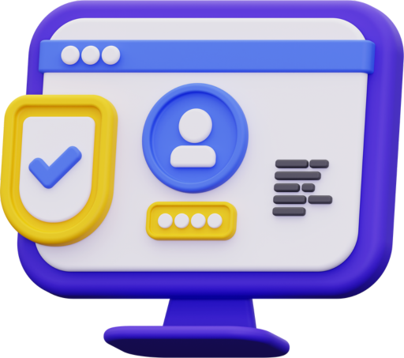
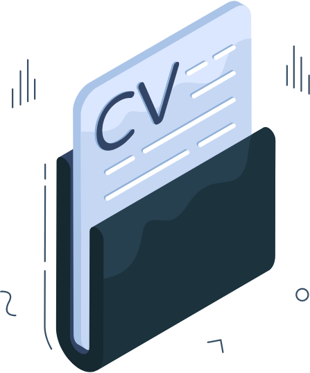
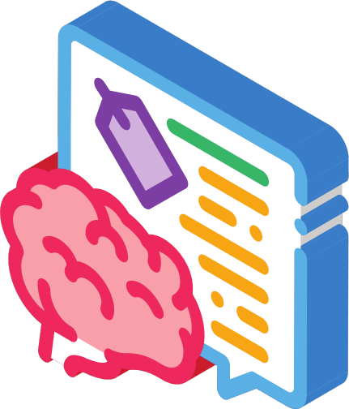

-
1
Zarejestruj się i uzupełnij profil
Stwórz profil zawodowy, dodaj swoje umiejętności, doświadczenie i ukończone kursy.
-
2
Zweryfikuj swoje umiejętności i doświadczenie
Potwierdź swoje kompetencje za pomocą testów, certyfikatów lub referencji.
-
3
Przeglądaj oferty pracy dopasowane do Twoich kwalifikacji
Otrzymuj oferty, które najlepiej odpowiadają Twojemu profilowi.
-
4
Generuj nowoczesne CV i aplikuj na wymarzone stanowiska
Skorzystaj z automatycznego kreatora CV i aplikuj bezpośrednio przez aplikację.



Jakub Kowalski
Senior Deep Learning Engineer
w firmie NVIDIA
Anna Nowak
React Developer with Python
w firmie Sigma IT Poland
Paweł Zieliński
Stażysta w Dziale HR
w firmie Geberit Polska